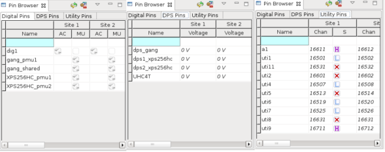
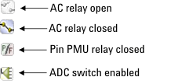
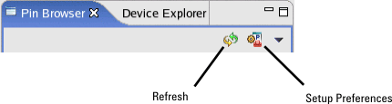

Pin Browser view
The Pin Browser view is part of the Hardware Perspective and provides an overview of the current status of each configured pin. This view displays the configured pins, listed in individual tabs, for: Digital, DPS, and Utility pins.

The following pin characteristics are displayed in the Pin Browser view:
Digital pins
- Pin name
- Connectivity (AC relay open or closed)
- Measurement Unit (shows if the Pin PMU is connected to the pin.)
- Mode (for Pin PMU connections, displays the measurement mode - pass/fail mode or value mode)
DPS pins
- Pin name
- Voltage applied to the pin
Utility pins
- Pin name
- State information
- Channel (test system channel number of the utility line)
For utility pins, the channel number of the pin is displayed in the Chan column and state information for the pin is displayed in the S column.
Icons in the Pin Browser view
The icons used in the Pin Browser are shown in the figure below. Note that the Pin PMU and ADC icons apply only to digital pins. If none of these icons is applicable, an X icon is displayed.

There are two icons at the top of the Pin Browser view.

- Clicking the Setup Preferences icon opens a preference window with the same settings of the Pin Browser preference page.
- Clicking the Refresh icon performs a manual refresh of the Pin Browser.
Sites
- all sites for up to 32 configured sites
- a section of 32 sites if more than 32 sites are configured.
Accessing other views and editors
When you click a particular digital pin or DPS pin in the Pin Browser, the Hardware view in the Hardware perspective displays a representation of the test system circuitry associated with that pin. The Hardware View also allows you to make changes to some of the settings for that pin and to observe the results of these changes.
You can view the defined pin names, write states, and channel numbers of utility pins in the Pin Browser. To query the read and write states of utility pins and change the write states of utility pins, use the Utility Line view.
Functional changes
- Introduced before SmarTest 6.3.2
- SmarTest 6.5.2: The Pin Browser view can display the Keep Alive characteristic for MCB AWG unit.